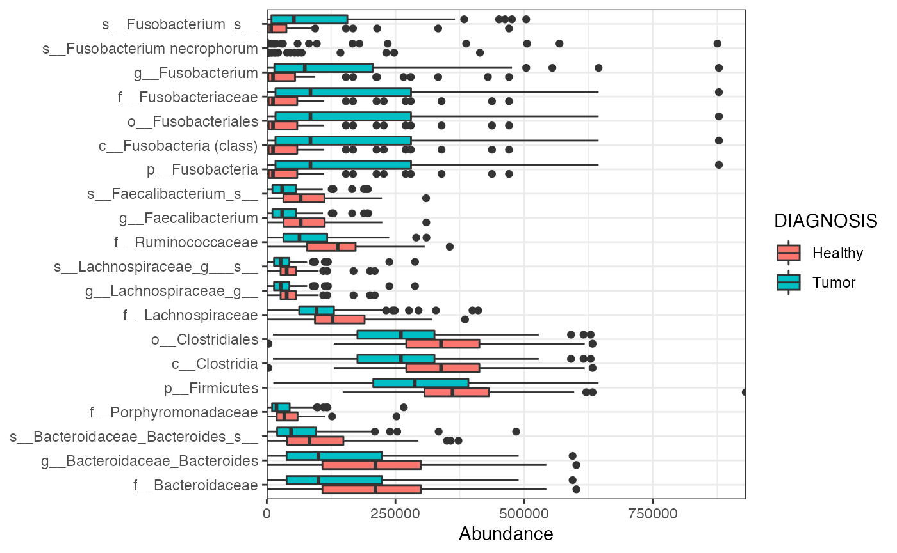
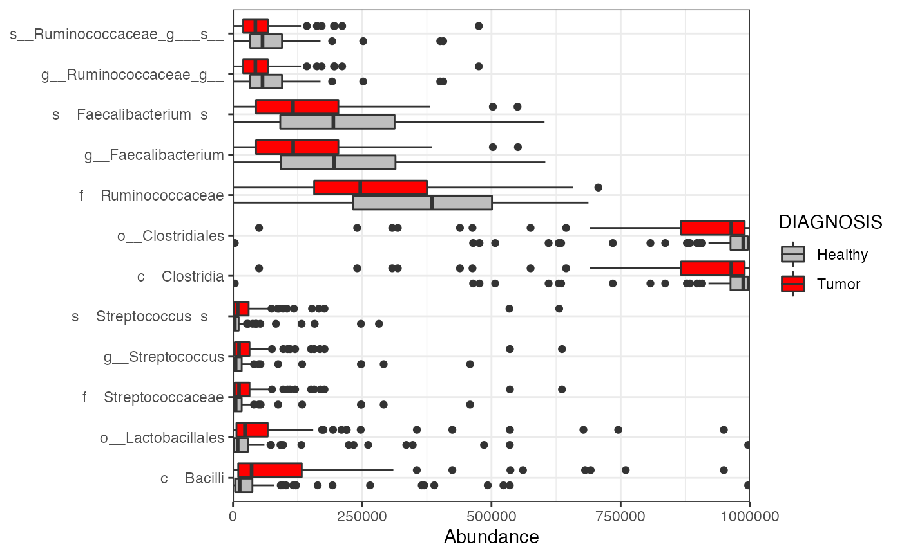
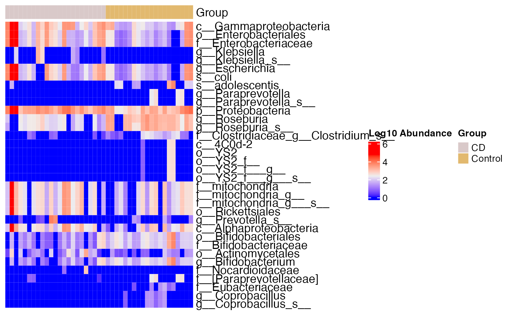
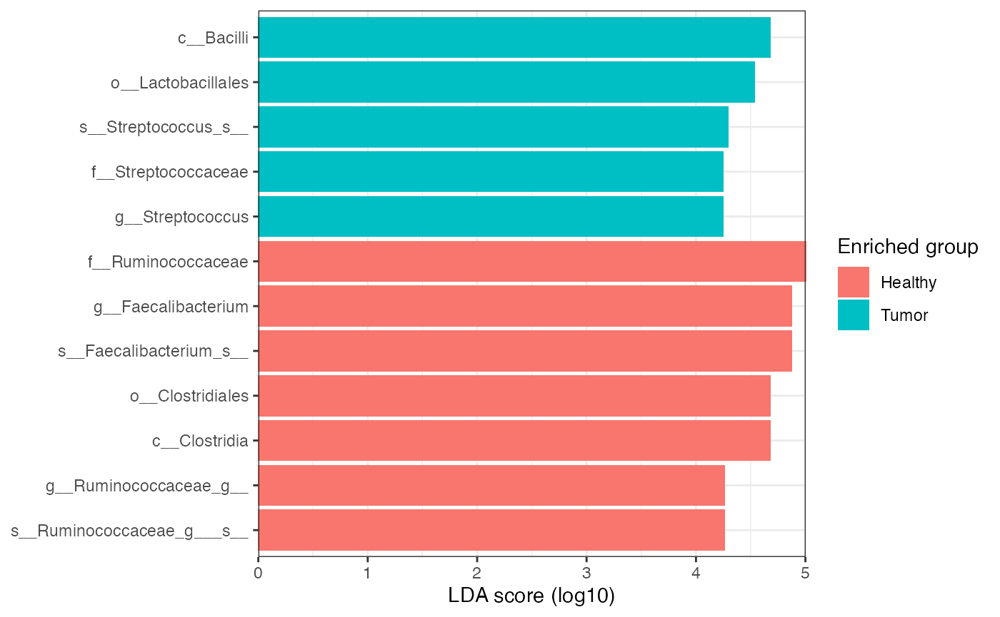
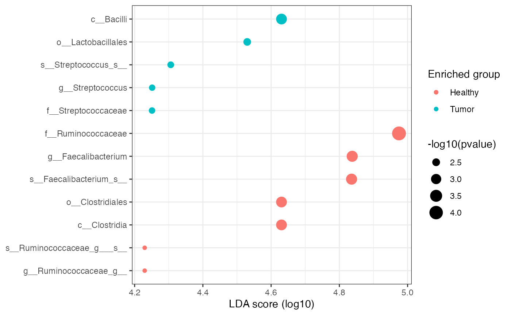
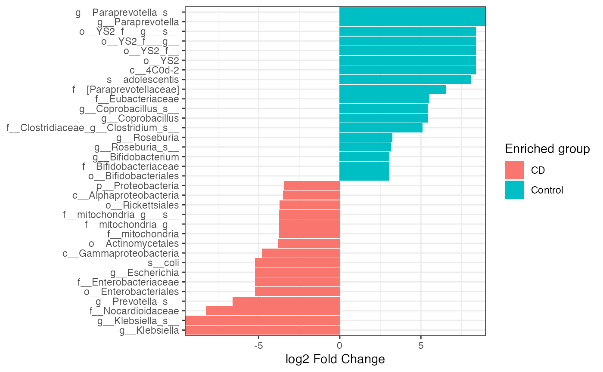
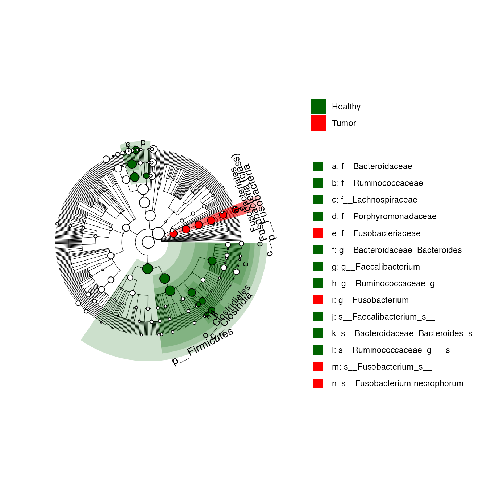
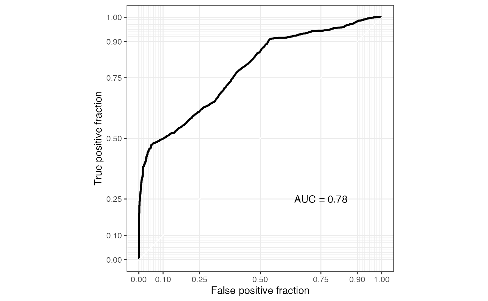
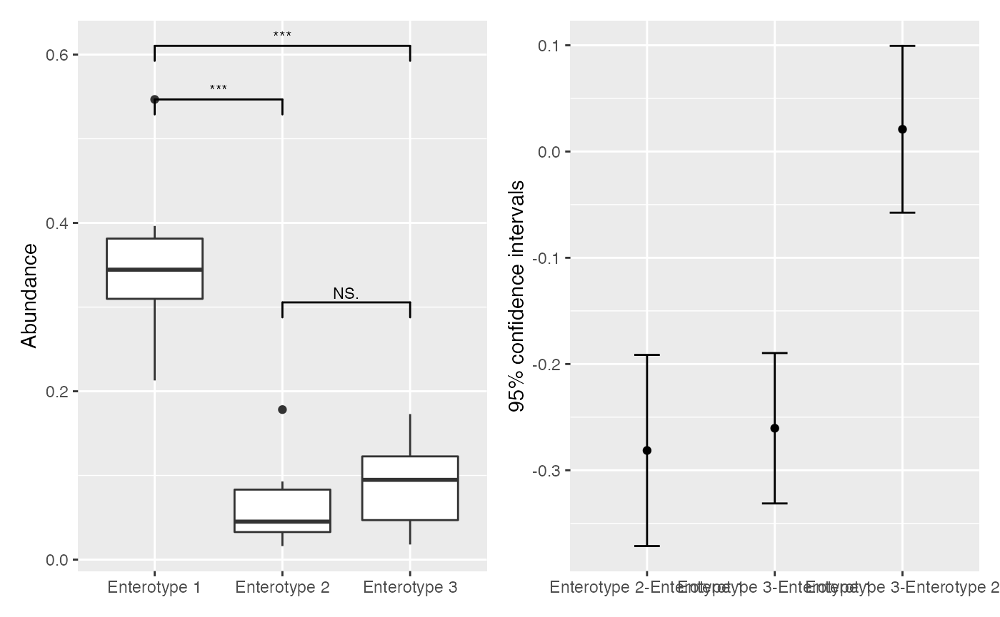
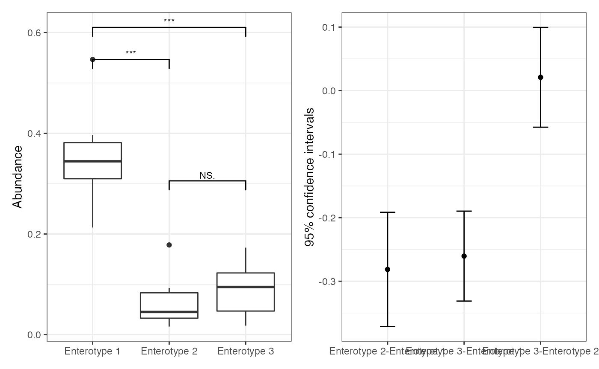

vignettes/microbiomeMarker-vignette.Rmd
microbiomeMarker-vignette.RmdIt is well established that the microbiome play a key role in human health and disease, due to its function such as host nutrition production (e.g. short-chain fatty acids, SCFA), defense against pathogens, and development of immunity (Gilbert et al. 2018). The microbiome provide novel biomarkers for many disease, and characterizing biomarkers based on microbiome profiles has great potential for translational medicine and precision medicine (Manor et al. 2020).
Differential analysis (DA) is a widely used approach to identify biomarkers. To date, a number of methods have been developed for microbiome marker discovery based on metagenomic profiles, e.g. simple statistical analysis methods STAMP (Parks et al. 2014), RNA-seq based methods such as edgeR (Robinson, McCarthy, and Smyth 2010) and DESeq2 (Love, Huber, and Anders 2014), metagenomeSeq (Paulson et al. 2013), and Linear Discriminant Analysis Effect Size (LEfSe) (Segata et al. 2011). However, all of these methods have its own advantages and disadvantages, and none of them is considered standard or universal. Moreover, the programs/softwares for different DA methods may be development using different programming languages, even in different operating systems. Here, we have developed an all-in-one R/Bioconductor package microbiomeMarker that integrates commonly used differential analysis methods as well as three machine learning-based approaches (Logistic regression, Random forest, and Support vector machine) to facilitate the identification of microbiome markers.
Install the package from Bioconductor directly:
if (!requireNamespace("BiocManager", quietly = TRUE)) {
install.packages("BiocManager")
}
BiocManager::install("microbiomeMarker")Or install the development version of the package from Github.
if (!requireNamespace("remotes", quietly = TRUE)) {
install.packages("remotes")
}
remotes::install_github("yiluheihei/microbiomeMarker")phyloseq is the most popular Biocondcutor package used by the microbiome research community, and phyloseq-class objects are a great data-standard for microbiome data in R. Therefore, the core functions in microbiomeMarker take phyloseq-class object as input. Conveniently, microbiomeMarker provides features to import external metagenomic abundance profiles from two popular microbiome analysis pipelines, qiime2 (Bolyen et al. 2019) and dada2 (Callahan et al. 2016), and return a phyloseq-class object.
The output of the dada2 pipeline is a feature table of amplicon sequence variants (an ASV table): A matrix with rows corresponding to samples and columns to ASVs, in which the value of each entry is the number of times that ASV was observed in that sample. This table is analogous to the traditional OTU table. Conveniently, taxa names are saved as
seq_tab <- readRDS(
system.file(
"extdata", "dada2_seqtab.rds",
package = "microbiomeMarker"
)
)
tax_tab <- readRDS(
system.file(
"extdata", "dada2_taxtab.rds",
package = "microbiomeMarker"
)
)
sam_tab <- read.table(
system.file(
"extdata", "dada2_samdata.txt",
package = "microbiomeMarker"
),
sep = "\t",
header = TRUE,
row.names = 1
)
ps <- import_dada2(seq_tab = seq_tab, tax_tab = tax_tab, sam_tab = sam_tab)
ps
#> phyloseq-class experiment-level object
#> otu_table() OTU Table: [ 232 taxa and 20 samples ]
#> sample_data() Sample Data: [ 20 samples by 4 sample variables ]
#> tax_table() Taxonomy Table: [ 232 taxa by 6 taxonomic ranks ]
#> refseq() DNAStringSet: [ 232 reference sequences ]qiime2 is the most widely used software for metagenomic analysis. User can import the feature table, taxonomic table, phylogenetic tree, representative sequence and sample metadata from qiime2 using import_qiime2().
otuqza_file <- system.file(
"extdata", "table.qza",
package = "microbiomeMarker"
)
taxaqza_file <- system.file(
"extdata", "taxonomy.qza",
package = "microbiomeMarker"
)
sample_file <- system.file(
"extdata", "sample-metadata.tsv",
package = "microbiomeMarker"
)
treeqza_file <- system.file(
"extdata", "tree.qza",
package = "microbiomeMarker"
)
ps <- import_qiime2(
otu_qza = otuqza_file, taxa_qza = taxaqza_file,
sam_tab = sample_file, tree_qza = treeqza_file
)
ps
#> phyloseq-class experiment-level object
#> otu_table() OTU Table: [ 770 taxa and 34 samples ]
#> sample_data() Sample Data: [ 34 samples by 9 sample variables ]
#> tax_table() Taxonomy Table: [ 770 taxa by 7 taxonomic ranks ]
#> phy_tree() Phylogenetic Tree: [ 770 tips and 768 internal nodes ]Moreover, microbiomeMarker reexports three import functions from phyloseq, including import_biom(), import_qiime() and import_mothur(), to help users to import abundance data from biom file, qiime1, and mothur. More details on these three import functions can be see from here.
Users can also import the external files into phyloseq-class object manually. For more details on how to create phyloseq-class object from manually imported data, please see this tutorial.
The object class used by the microbiomeMarker package to store the result of microbiome marker analysis (also referred as DA) is the microbiomeMarker-class object. The microbiomeMarker-class extends the phyloseq-class by adding three custom slots:
marker_table: also a new S4 class to store the markers, which is inherit from data.frame. Rows represent the microbiome markers and variables represents feature of the marker, such as feature names, effect size and p value.norm_method: normalization method.diff_method: DA method.Once users have a microbiomeMarker-class object, many accessor functions are available to query aspects of the data set. The function name and its purpose can be seen here.
A number of methods have been developed for identifying differentially metagenomic features. microbiomeMarker provides the most commonly used DA methods which can be divided into three main categories: a) simple statistical tests; b) RNA-seq based methods; c) metagenomic based methods. All the names of DA functions in microbiomeMarker are prefixed with run_ (the run_* family of functions).
By default, all the methods will perform DA on all levels of features (taxa_rank = "all" in DA functions) like LEfSe (Segata et al. 2011), therefore, the corrected p value in the result (var padj in the marker_table object) may be over-corrected. Users can change the para taxa_rank to a specific level of interest, and the DA will only perform in the specified level. For simplicity, DA on a specific level of feature is not contained in this vignette.
It is critical to normalize the metagenomic data to eliminate artifactual bias in the original measurements prior to DA (Weiss et al. 2017). Here in microbiomeMarker, we provides seven popular normalization methods, including:
rarefy: random subsampling counts to the smallest library size in the data set.TSS: total sum scaling, also referred to as “relative abundance”, the abundances were normalized by dividing the corresponding sample library size.TMM: trimmed mean of m-values. First, a sample is chosen as reference. The scaling factor is then derived using a weighted trimmed mean over the differences of the log-transformed gene-countRLE: relative log expression, RLE uses a pseudo-reference calculated using the geometric mean of the gene-specific abundances over all samples. The scaling factors are then calculated as the median of the gene counts ratios between the samples and the reference.CSS: cumulative sum scaling, calculates scaling factors as the cumulative sum of gene abundances up to a data-derived threshold.CLR: centered log-ratio normalization.CPM: pre-sample normalization of the sum of the values to 1e+06.We can use norm_*() family of functions or a wrapper function normalize to normalize the original metagenomic abundance data.
# take tss as example
norm_tss(ps)
#> phyloseq-class experiment-level object
#> otu_table() OTU Table: [ 770 taxa and 34 samples ]
#> sample_data() Sample Data: [ 34 samples by 9 sample variables ]
#> tax_table() Taxonomy Table: [ 770 taxa by 7 taxonomic ranks ]
#> phy_tree() Phylogenetic Tree: [ 770 tips and 768 internal nodes ]
normalize(ps, method = "TSS")
#> phyloseq-class experiment-level object
#> otu_table() OTU Table: [ 770 taxa and 34 samples ]
#> sample_data() Sample Data: [ 34 samples by 9 sample variables ]
#> tax_table() Taxonomy Table: [ 770 taxa by 7 taxonomic ranks ]
#> phy_tree() Phylogenetic Tree: [ 770 tips and 768 internal nodes ]Note: all the DA functions provides a para to specify the normalization method. We emphasize that users should specify the normalization method in the DA functions rather than using these normalization functions directly. If you use normalize data first and then perform DA, you should set the norm_method manually. We recommend to use the default normalization methods for the corresponding DA methods, e.g. “CPM” for LEfSe and “CSS” for metagenomeSeq, and the default values of norm in the DA functions is set as their default normalization methods.
data(kostic_crc)
mm_test <- normalize(kostic_crc, method = "CPM") %>%
run_lefse(
wilcoxon_cutoff = 0.01,
norm = "none", # must be "none" since the input has been normalized
group = "DIAGNOSIS",
kw_cutoff = 0.01,
multigrp_strat = TRUE,
lda_cutoff = 4
)
# equivalent to
run_lefse(
wilcoxon_cutoff = 0.01,
norm = "CPM",
group = "DIAGNOSIS",
kw_cutoff = 0.01,
multigrp_strat = TRUE,
lda_cutoff = 4
)In practice, simple statitical tests such as t-test (for two groups comparison) and Kruskal-Wallis rank sum test (for multiple groups comparison) are frequently used for metagenomic differential analysis. STAMP [parks2014stamp] is a widely-used graphical software package that provides “best pratices” in choose appropriate statistical methods for metagenomic analysis. Here in microbiomeMarker, t-test, Welch’s t-test, and White’s non-parametric t-test are provided for two groups comparison, and ANOVA and Kruskal–Wallis test for multiple groups comparisons.
We can use test_two_groups() to perform simple statistical differential test between two groups.
data(enterotypes_arumugam)
tg_welch <- run_test_two_groups(
enterotypes_arumugam,
group = "Gender",
method = "welch.test"
)
# three significantly differential genera (marker)
tg_welch
#> microbiomeMarker-class inherited from phyloseq-class
#> normalization method: [ TSS ]
#> microbiome marker identity method: [ welch.test ]
#> marker_table() Marker Table: [ 3 microbiome markers with 5 variables ]
#> otu_table() OTU Table: [ 244 taxa and 39 samples ]
#> sample_data() Sample Data: [ 39 samples by 9 sample variables ]
#> tax_table() Taxonomy Table: [ 244 taxa by 1 taxonomic ranks ]
# details of result of the three markers
head(marker_table(tg_welch))
#> feature enrich_group ef_diff_mean
#> marker1 p__Firmicutes|g__Heliobacterium M -8.542172e-06
#> marker2 p__Firmicutes|g__Parvimonas M -1.339857e-05
#> marker3 p__Firmicutes|g__Peptostreptococcus M -6.695045e-05
#> pvalue padj
#> marker1 0.02940341 0.02940341
#> marker2 0.03281399 0.03281399
#> marker3 0.01714937 0.01714937Function run_test_multiple_groups() is constructed for statistical differential test for multiple groups.
# three groups
ps <- phyloseq::subset_samples(
enterotypes_arumugam,
Enterotype %in% c("Enterotype 3", "Enterotype 2", "Enterotype 1")
)
mg_anova <- run_test_multiple_groups(
ps,
group = "Enterotype",
method = "anova"
)
# 24 markers
mg_anova
#> microbiomeMarker-class inherited from phyloseq-class
#> normalization method: [ TSS ]
#> microbiome marker identity method: [ anova ]
#> marker_table() Marker Table: [ 24 microbiome markers with 5 variables ]
#> otu_table() OTU Table: [ 238 taxa and 32 samples ]
#> sample_data() Sample Data: [ 32 samples by 9 sample variables ]
#> tax_table() Taxonomy Table: [ 238 taxa by 1 taxonomic ranks ]
head(marker_table(mg_anova))
#> feature enrich_group ef_eta_squared
#> marker1 p__Bacteroidetes Enterotype 1 0.5821619
#> marker2 p__Unclassified Enterotype 3 0.4497271
#> marker3 p__Actinobacteria|g__Scardovia Enterotype 2 0.2196652
#> marker4 p__Bacteroidetes|g__Alistipes Enterotype 3 0.2001541
#> marker5 p__Bacteroidetes|g__Bacteroides Enterotype 1 0.7633661
#> marker6 p__Bacteroidetes|g__Parabacteroides Enterotype 1 0.2582573
#> pvalue padj
#> marker1 3.196070e-06 3.196070e-06
#> marker2 1.731342e-04 1.731342e-04
#> marker3 2.742042e-02 2.742042e-02
#> marker4 3.922758e-02 3.922758e-02
#> marker5 8.396825e-10 8.396825e-10
#> marker6 1.314233e-02 1.314233e-02Moreover, a wrapper of run_test_two_groups() and run_test_multiple_groups() named run_simple_stat() is provided for simple statistical differential analysis.
Some models developed specifically for RNA-Seq data have been proposed for metagenomic differential analysis. Three popular methods, including DESeq2 (Love, Huber, and Anders 2014) (run_deseq2()), edgeR (Robinson, McCarthy, and Smyth 2010) (run_edger()), and Voom (Law et al. 2014) (run_limma_voom()) are provided in microbiomeMarker.
Here we take edgeR method as an example.
# contrast must be specified for two groups comparison
data(pediatric_ibd)
mm_edger <- run_edger(
pediatric_ibd,
group = "Class",
pvalue_cutoff = 0.1,
p_adjust = "fdr"
)
mm_edger
#> microbiomeMarker-class inherited from phyloseq-class
#> normalization method: [ TMM ]
#> microbiome marker identity method: [ edgeR: LRT ]
#> marker_table() Marker Table: [ 34 microbiome markers with 5 variables ]
#> otu_table() OTU Table: [ 786 taxa and 43 samples ]
#> sample_data() Sample Data: [ 43 samples by 2 sample variables ]
#> tax_table() Taxonomy Table: [ 786 taxa by 1 taxonomic ranks ]
# multiple groups
data(cid_ying)
cid <- phyloseq::subset_samples(
cid_ying,
Consistency %in% c("formed stool", "liquid", "semi-formed")
)
mm_edger_mg <- run_edger(
cid,
group = "Consistency",
method = "QLFT",
pvalue_cutoff = 0.05,
p_adjust = "fdr"
)
mm_edger_mg
#> microbiomeMarker-class inherited from phyloseq-class
#> normalization method: [ TMM ]
#> microbiome marker identity method: [ edgeR: QLFT ]
#> marker_table() Marker Table: [ 325 microbiome markers with 5 variables ]
#> otu_table() OTU Table: [ 669 taxa and 413 samples ]
#> sample_data() Sample Data: [ 413 samples by 6 sample variables ]
#> tax_table() Taxonomy Table: [ 669 taxa by 1 taxonomic ranks ]Five methods, LEfSe (Segata et al. 2011), metagenomeSeq (Paulson et al. 2013), ALDEx2 (Fernandes et al. 2014), ANCOM (Mandal et al. 2015), and ANCOMBC (Lin and Peddada 2020), which were developed specifically for microbiome data (contain many more zeros that RNA-seq data), are also provided in our package. All these methods have greater power to detect differentially features than simple statistical tests by incorporating more sensitive tests.
Curently, LEfSe is the most popular tool for microbiome biomarker discovery. Here we take LEfSe method for example:
data(kostic_crc)
kostic_crc_small <- phyloseq::subset_taxa(
kostic_crc,
Phylum %in% c("Firmicutes")
)
mm_lefse <- run_lefse(
kostic_crc_small,
wilcoxon_cutoff = 0.01,
group = "DIAGNOSIS",
kw_cutoff = 0.01,
multigrp_strat = TRUE,
lda_cutoff = 4
)
mm_lefse
#> microbiomeMarker-class inherited from phyloseq-class
#> normalization method: [ CPM ]
#> microbiome marker identity method: [ lefse ]
#> marker_table() Marker Table: [ 12 microbiome markers with 5 variables ]
#> otu_table() OTU Table: [ 276 taxa and 177 samples ]
#> sample_data() Sample Data: [ 177 samples by 71 sample variables ]
#> tax_table() Taxonomy Table: [ 276 taxa by 1 taxonomic ranks ]
head(marker_table(mm_lefse))
#> feature
#> marker1 k__Bacteria|p__Firmicutes|c__Clostridia|o__Clostridiales|f__Ruminococcaceae
#> marker2 k__Bacteria|p__Firmicutes|c__Clostridia|o__Clostridiales|f__Ruminococcaceae|g__Faecalibacterium
#> marker3 k__Bacteria|p__Firmicutes|c__Clostridia|o__Clostridiales|f__Ruminococcaceae|g__Faecalibacterium|s__Faecalibacterium_s__
#> marker4 k__Bacteria|p__Firmicutes|c__Clostridia
#> marker5 k__Bacteria|p__Firmicutes|c__Clostridia|o__Clostridiales
#> marker6 k__Bacteria|p__Firmicutes|c__Clostridia|o__Clostridiales|f__Ruminococcaceae|g__Ruminococcaceae_g__
#> enrich_group ef_lda pvalue padj
#> marker1 Healthy 4.987153 7.154793e-05 7.154793e-05
#> marker2 Healthy 4.841201 5.914547e-04 5.914547e-04
#> marker3 Healthy 4.839066 6.043983e-04 6.043983e-04
#> marker4 Healthy 4.631952 7.176046e-04 7.176046e-04
#> marker5 Healthy 4.631952 7.176046e-04 7.176046e-04
#> marker6 Healthy 4.250900 6.990210e-03 6.990210e-03Given that supervised learning (SL) methods can be used to predict differentiate samples based on there metagenomic profiles efficiently (Knights et al. 2011). microbiomeMarker also provides three SL classification models, random forest, logistic regression, and support vector machine, to identify microbiome biomarkers. In addition, the feature importance score for each marker will be provided too.
Here we take random forest for example:
# must specify the importance para for random forest
set.seed(2021)
# small example phyloseq object for test
ps_small <- phyloseq::subset_taxa(
enterotypes_arumugam,
Phylum %in% c("Firmicutes", "Bacteroidetes")
)
mm_lr <- run_sl(
ps_small,
group = "Gender",
nfolds = 2,
nrepeats = 1,
taxa_rank = "Genus",
top_n = 15,
norm = "TSS",
method = "LR",
)
marker_table(mm_lr)
#> feature enrich_group ef_imp
#> marker1 Dyadobacter M 100.00000
#> marker2 Paenibacillus M 80.09623
#> marker3 Weissella M 52.90190
#> marker4 Bacillales F 49.21685
#> marker5 Zunongwangia F 47.67223
#> marker6 Macrococcus M 46.78631
#> marker7 Heliobacterium M 42.77684
#> marker8 Gemella M 40.85011
#> marker9 Syntrophothermus M 36.87214
#> marker10 Geobacillus M 33.29326
#> marker11 Symbiobacterium M 32.72664
#> marker12 Desulfitobacterium F 30.36170
#> marker13 Thermoanaerobacter F 29.51966
#> marker14 Porphyromonadaceae F 28.72514
#> marker15 Syntrophomonas M 25.87942Please note that SL methods can be biased for data with sample size due to the model overfitting. Thus, we advise users to use these SL methods with caution for a smaller dataset.
All the DE methods in microbiomeMarker, except for simple statistical tests for two groups comparison (test_mulitple_groups()), can be used for multiple groups comparison, that is to find markers that differ between any of the groups by analyze all groups at once. Users can perform post-hoc test to identify which pairs of groups may differ from each other using run_posthoc_test(). Apparently, the mutliple groups comparison will result in a larger number of genes than the individual pair-wise comparisons.
pht <- run_posthoc_test(ps, group = "Enterotype")
pht
#> postHocTest-class object
#> Pairwise test result of 238 features, DataFrameList object, each DataFrame has five variables:
#> comparisons : pair groups to test which separated by '-'
#> diff_mean: difference in mean proportions
#> pvalue : post hoc test p values
#> ci_lower : lower confidence interval
#> ci_upper : upper confidence interval
#> Posthoc multiple comparisons of means using tukey method
# 24 significantly differential genera
markers <- marker_table(mg_anova)$feature
markers
#> p__Bacteroidetes p__Unclassified
#> "p__Bacteroidetes" "p__Unclassified"
#> p__Actinobacteria|g__Scardovia p__Bacteroidetes|g__Alistipes
#> "p__Actinobacteria|g__Scardovia" "p__Bacteroidetes|g__Alistipes"
#> p__Bacteroidetes|g__Bacteroides p__Bacteroidetes|g__Parabacteroides
#> "p__Bacteroidetes|g__Bacteroides" "p__Bacteroidetes|g__Parabacteroides"
#> p__Bacteroidetes|g__Prevotella p__Firmicutes|g__Bulleidia
#> "p__Bacteroidetes|g__Prevotella" "p__Firmicutes|g__Bulleidia"
#> p__Firmicutes|g__Catenibacterium p__Firmicutes|g__Catonella
#> "p__Firmicutes|g__Catenibacterium" "p__Firmicutes|g__Catonella"
#> p__Firmicutes|g__Holdemania p__Firmicutes|g__Lactobacillus
#> "p__Firmicutes|g__Holdemania" "p__Firmicutes|g__Lactobacillus"
#> p__Firmicutes|g__Macrococcus p__Firmicutes|g__Peptostreptococcus
#> "p__Firmicutes|g__Macrococcus" "p__Firmicutes|g__Peptostreptococcus"
#> p__Firmicutes|g__Ruminococcus p__Firmicutes|g__Selenomonas
#> "p__Firmicutes|g__Ruminococcus" "p__Firmicutes|g__Selenomonas"
#> p__Firmicutes|g__Streptococcus p__Firmicutes|g__Subdoligranulum
#> "p__Firmicutes|g__Streptococcus" "p__Firmicutes|g__Subdoligranulum"
#> p__Proteobacteria|g__Bartonella p__Proteobacteria|g__Brucella
#> "p__Proteobacteria|g__Bartonella" "p__Proteobacteria|g__Brucella"
#> p__Proteobacteria|g__Granulibacter p__Proteobacteria|g__Rhodospirillum
#> "p__Proteobacteria|g__Granulibacter" "p__Proteobacteria|g__Rhodospirillum"
#> p__Proteobacteria|g__Stenotrophomonas p__Unclassified|g__Unclassified
#> "p__Proteobacteria|g__Stenotrophomonas" "p__Unclassified|g__Unclassified"
# take a marker "p__Bacteroidetes|g__Bacteroides"
# for example, we will show "p__Bacteroidetes|g__Bacteroides" differ from
# between Enterotype 2-Enterotype 1 and Enterotype 3-Enterotype 2.
extract_posthoc_res(pht, "p__Bacteroidetes|g__Bacteroides")[[1]]
#> DataFrame with 3 rows and 5 columns
#> comparisons diff_mean pvalue
#> <character> <numeric> <numeric>
#> Enterotype 2-Enterotype 1 Enterotype 2-Enterot.. -0.2813948 4.77015e-08
#> Enterotype 3-Enterotype 1 Enterotype 3-Enterot.. -0.2604547 1.63635e-09
#> Enterotype 3-Enterotype 2 Enterotype 3-Enterot.. 0.0209401 7.88993e-01
#> ci_lower ci_upper
#> <numeric> <numeric>
#> Enterotype 2-Enterotype 1 -0.3713469 -0.1914428
#> Enterotype 3-Enterotype 1 -0.3312286 -0.1896808
#> Enterotype 3-Enterotype 2 -0.0575765 0.0994567In addition, for the five linear models-based methods, including edgeR, DESeq2, metagenoSeq, limma-voom, and ANCOMBC, users can perform pair-wise comparisons by setting the argument contrast, a two length character in which the first element is the reference level (donominator of the logFC) and the second element is used as baseline (numerator for fold change). For more details on contrast argument, please see the help page of the corresponding functions. Here we take limma-voom method as example:
# comparison between Enterotype 3 and Enterotype 2
mm_lv_pair <- run_limma_voom(
ps,
"Enterotype",
contrast = c("Enterotype 3", "Enterotype 2"),
pvalue_cutoff = 0.05,
p_adjust = "fdr"
)
mm_lv_pair
#> microbiomeMarker-class inherited from phyloseq-class
#> normalization method: [ none ]
#> microbiome marker identity method: [ limma_voom ]
#> marker_table() Marker Table: [ 3 microbiome markers with 5 variables ]
#> otu_table() OTU Table: [ 238 taxa and 32 samples ]
#> sample_data() Sample Data: [ 32 samples by 9 sample variables ]
#> tax_table() Taxonomy Table: [ 238 taxa by 1 taxonomic ranks ]
head(marker_table(mm_lv_pair))
#> feature enrich_group ef_logFC pvalue
#> marker1 p__Bacteroidetes|g__Prevotella Enterotype.2 5.853735 1.051399e-12
#> marker2 p__Verrucomicrobia|g__Akkermansia Enterotype.3 -8.651612 3.104720e-04
#> marker3 p__Verrucomicrobia Enterotype.3 -8.299989 5.426191e-04
#> padj
#> marker1 2.502331e-10
#> marker2 3.694617e-02
#> marker3 4.304778e-02In microbiomeMarker, users can visualize the microbiome biomarker in different ways, such as box plot, bar plot, dot plot, heatmap, and cladogram. Except for heatmap, all these plots are generated using the most flexible and popular data visualization package ggplot2. Therefore, these plots can be easily customized before they are generated using the build-in functions of ggplot2, e.g. using theme() to modify the titles and labels. Heatmap is generated using a fantastic Bioconductor package ComplexHeatmap package.
First of all, users can visualize the abundances of markers using box plots with function plot_abundance(). We emphasize a concern that the group para for plot_abunance() must be keep same with the group para in the differential analysis function. By default, plot_abundance() will plot all the markers, users can plot the specificity markers using para markers.
p_abd <- plot_abundance(mm_lefse, group = "DIAGNOSIS")
p_abd
# customize the plot with ggplot2, modify the fill color manually
library(ggplot2)
p_abd + scale_fill_manual(values = c("Healthy" = "grey", "Tumor" = "red"))
Moreover, users can also visualize the abundances of markers using heatmap, in which rows represents the markers and columns represents the samples. Like the above abundance box plot, users should pay attention to the para group, and control which markers to display by setting para markers.
plot_heatmap(mm_edger, transform = "log10p", group = "Class")
We also estimate the effect size to measure the magnitude the observed phenomenon due to each characterizing marker.
plot_ef_bar() and plot_ef_dot() were used to show the bar and dot plot of the effect sizes of markers.
# bar plot
plot_ef_bar(mm_lefse)
# dot plot
plot_ef_dot(mm_lefse)
Different effect size measures can be calculated for different DA methods, e.g. lda (linear discriminant analysis) for LEfSe, imp (importance) for SL methods. plot_ef_bar() and plot_ef_dot() can set the axis label of effect size correctly without manual intervention.
# set the x axis to log2 Fold Change automatically without manual intervention
plot_ef_bar(mm_edger)
As mentioned above, the microbiome marker analysis will run on all levels of features by default. Users can plot a LEfSe cladogram using function plot_cladogram().
plot_cladogram(mm_lefse, color = c(Healthy = "darkgreen", Tumor = "red")) +
theme(plot.margin = margin(0, 0, 0, 0))
ROC (receiver operating characteristic) curve can be used to show the prediction performance of the identified marker. And AUC (area under the ROC curve) measures the ability of the identified marker to classify the samples. plot_sl_roc() was provided to show ROC curve and AUC value to evaluate marker prediction performance.
set.seed(2021)
plot_sl_roc(mm_lr, group = "Gender")
As shown in @ref(simple-stat), post-hoc test can be used to identify which pairs of groups may differ from each other. plot_postHocTest() was provided to allow users visualize the post-hoc test result.
p_pht <- plot_postHocTest(pht, feature = "p__Bacteroidetes|g__Bacteroides")
p_pht
The pot-hoc plots were wrapped using patchwork, and users can modifying the themes of all subplots using &.
p_pht & theme_bw()
Kindly cite as follows: Yang Cao (2020). microbiomeMarker: microbiome biomarker analysis. R package version 0.0.1.9000. https://github.com/yiluheihei/microbiomeMarker. DOI: 10.5281/zenodo.3749415.
If you have any question, please file an issue on the issue tracker following the instructions in the issue template:
Please briefly describe your problem, what output actually happened, and what output you expect.
Please provide a minimal reproducible example. For more details on how to make a great minimal reproducible example, see how to make a great r reproducible example and https://www.tidyverse.org/help/#reprex.
This vignette was created under the following conditions:
sessionInfo()
#> R version 4.2.0 (2022-04-22)
#> Platform: x86_64-apple-darwin17.0 (64-bit)
#> Running under: macOS Big Sur/Monterey 10.16
#>
#> Matrix products: default
#> BLAS: /Library/Frameworks/R.framework/Versions/4.2/Resources/lib/libRblas.0.dylib
#> LAPACK: /Library/Frameworks/R.framework/Versions/4.2/Resources/lib/libRlapack.dylib
#>
#> locale:
#> [1] en_US.UTF-8/en_US.UTF-8/en_US.UTF-8/C/en_US.UTF-8/en_US.UTF-8
#>
#> attached base packages:
#> [1] stats graphics grDevices utils datasets methods base
#>
#> other attached packages:
#> [1] caret_6.0-92 lattice_0.20-45 ggplot2_3.3.6
#> [4] microbiomeMarker_1.3.2 BiocStyle_2.24.0
#>
#> loaded via a namespace (and not attached):
#> [1] utf8_1.2.2 tidyselect_1.1.2
#> [3] RSQLite_2.2.14 AnnotationDbi_1.58.0
#> [5] grid_4.2.0 BiocParallel_1.30.3
#> [7] Rtsne_0.16 pROC_1.18.0
#> [9] munsell_0.5.0 codetools_0.2-18
#> [11] ragg_1.2.2 future_1.26.1
#> [13] withr_2.5.0 colorspace_2.0-3
#> [15] Biobase_2.56.0 phyloseq_1.40.0
#> [17] highr_0.9 knitr_1.39
#> [19] stats4_4.2.0 ggsignif_0.6.3
#> [21] listenv_0.8.0 labeling_0.4.2
#> [23] MatrixGenerics_1.8.0 Rdpack_2.3
#> [25] GenomeInfoDbData_1.2.8 plotROC_2.3.0
#> [27] farver_2.1.0 bit64_4.0.5
#> [29] rhdf5_2.40.0 rprojroot_2.0.3
#> [31] parallelly_1.31.1 vctrs_0.4.1
#> [33] treeio_1.20.0 generics_0.1.2
#> [35] TH.data_1.1-1 ipred_0.9-13
#> [37] xfun_0.31 R6_2.5.1
#> [39] doParallel_1.0.17 GenomeInfoDb_1.32.2
#> [41] clue_0.3-61 locfit_1.5-9.5
#> [43] bitops_1.0-7 rhdf5filters_1.8.0
#> [45] microbiome_1.18.0 cachem_1.0.6
#> [47] gridGraphics_0.5-1 DelayedArray_0.22.0
#> [49] scales_1.2.0 multcomp_1.4-19
#> [51] nnet_7.3-17 gtable_0.3.0
#> [53] globals_0.15.0 sandwich_3.0-1
#> [55] timeDate_3043.102 rlang_1.0.2
#> [57] genefilter_1.78.0 systemfonts_1.0.4
#> [59] GlobalOptions_0.1.2 splines_4.2.0
#> [61] lazyeval_0.2.2 ModelMetrics_1.2.2.2
#> [63] BiocManager_1.30.18 yaml_2.3.5
#> [65] reshape2_1.4.4 tools_4.2.0
#> [67] lava_1.6.10 bookdown_0.26
#> [69] ggplotify_0.1.0 ellipsis_0.3.2
#> [71] gplots_3.1.3 jquerylib_0.1.4
#> [73] biomformat_1.24.0 RColorBrewer_1.1-3
#> [75] BiocGenerics_0.42.0 Rcpp_1.0.8.3
#> [77] plyr_1.8.7 zlibbioc_1.42.0
#> [79] purrr_0.3.4 RCurl_1.98-1.6
#> [81] rpart_4.1.16 Wrench_1.14.0
#> [83] GetoptLong_1.0.5 S4Vectors_0.34.0
#> [85] zoo_1.8-10 SummarizedExperiment_1.26.1
#> [87] cluster_2.1.3 fs_1.5.2
#> [89] magrittr_2.0.3 data.table_1.14.2
#> [91] circlize_0.4.15 mvtnorm_1.1-3
#> [93] matrixStats_0.62.0 patchwork_1.1.1
#> [95] evaluate_0.15 xtable_1.8-4
#> [97] XML_3.99-0.9 IRanges_2.30.0
#> [99] shape_1.4.6 compiler_4.2.0
#> [101] tibble_3.1.7 KernSmooth_2.23-20
#> [103] crayon_1.5.1 htmltools_0.5.2
#> [105] ggfun_0.0.6 mgcv_1.8-40
#> [107] tidyr_1.2.0 geneplotter_1.74.0
#> [109] aplot_0.1.6 libcoin_1.0-9
#> [111] ANCOMBC_1.6.0 lubridate_1.8.0
#> [113] DBI_1.1.2 ComplexHeatmap_2.12.0
#> [115] MASS_7.3-56 Matrix_1.4-1
#> [117] ade4_1.7-19 permute_0.9-7
#> [119] cli_3.3.0 rbibutils_2.2.8
#> [121] parallel_4.2.0 gower_1.0.0
#> [123] igraph_1.3.1 GenomicRanges_1.48.0
#> [125] pkgconfig_2.0.3 pkgdown_2.0.3
#> [127] coin_1.4-2 recipes_0.2.0
#> [129] foreach_1.5.2 ggtree_3.4.0
#> [131] annotate_1.74.0 bslib_0.3.1
#> [133] hardhat_1.0.0 multtest_2.52.0
#> [135] XVector_0.36.0 prodlim_2019.11.13
#> [137] yulab.utils_0.0.4 stringr_1.4.0
#> [139] digest_0.6.29 vegan_2.6-2
#> [141] Biostrings_2.64.0 rmarkdown_2.14
#> [143] tidytree_0.3.9 edgeR_3.38.1
#> [145] gtools_3.9.2.1 modeltools_0.2-23
#> [147] rjson_0.2.21 nloptr_2.0.3
#> [149] lifecycle_1.0.1 nlme_3.1-157
#> [151] jsonlite_1.8.0 Rhdf5lib_1.18.2
#> [153] desc_1.4.1 limma_3.52.1
#> [155] fansi_1.0.3 pillar_1.7.0
#> [157] KEGGREST_1.36.0 fastmap_1.1.0
#> [159] httr_1.4.3 survival_3.3-1
#> [161] glue_1.6.2 png_0.1-7
#> [163] iterators_1.0.14 glmnet_4.1-4
#> [165] bit_4.0.4 class_7.3-20
#> [167] stringi_1.7.6 sass_0.4.1
#> [169] metagenomeSeq_1.38.0 blob_1.2.3
#> [171] textshaping_0.3.6 DESeq2_1.36.0
#> [173] caTools_1.18.2 memoise_2.0.1
#> [175] dplyr_1.0.9 future.apply_1.9.0
#> [177] ape_5.6-2Bolyen, Evan, Jai Ram Rideout, Matthew R Dillon, Nicholas A Bokulich, Christian C Abnet, Gabriel A Al-Ghalith, Harriet Alexander, et al. 2019. “Reproducible, Interactive, Scalable and Extensible Microbiome Data Science Using Qiime 2.” Nature Biotechnology 37 (8): 852–57.
Callahan, Benjamin J, Paul J McMurdie, Michael J Rosen, Andrew W Han, Amy Jo A Johnson, and Susan P Holmes. 2016. “DADA2: High-Resolution Sample Inference from Illumina Amplicon Data.” Nature Methods 13 (7): 581–83.
Fernandes, Andrew D, Jennifer Ns Reid, Jean M Macklaim, Thomas A McMurrough, David R Edgell, and Gregory B Gloor. 2014. “Unifying the Analysis of High-Throughput Sequencing Datasets: Characterizing Rna-Seq, 16S rRNA Gene Sequencing and Selective Growth Experiments by Compositional Data Analysis.” Microbiome 2 (1): 1–13.
Gilbert, Jack A, Martin J Blaser, J Gregory Caporaso, Janet K Jansson, Susan V Lynch, and Rob Knight. 2018. “Current Understanding of the Human Microbiome.” Nature Medicine 24 (4): 392–400.
Knights, Dan, Justin Kuczynski, Omry Koren, Ruth E Ley, Dawn Field, Rob Knight, Todd Z DeSantis, and Scott T Kelley. 2011. “Supervised Classification of Microbiota Mitigates Mislabeling Errors.” The ISME Journal 5 (4): 570–73.
Law, Charity W, Yunshun Chen, Wei Shi, and Gordon K Smyth. 2014. “Voom: Precision Weights Unlock Linear Model Analysis Tools for Rna-Seq Read Counts.” Genome Biology 15 (2): 1–17.
Lin, Huang, and Shyamal Das Peddada. 2020. “Analysis of Compositions of Microbiomes with Bias Correction.” Nature Communications 11 (1): 1–11.
Love, Michael I, Wolfgang Huber, and Simon Anders. 2014. “Moderated Estimation of Fold Change and Dispersion for Rna-Seq Data with Deseq2.” Genome Biology 15 (12): 1–21.
Mandal, Siddhartha, Will Van Treuren, Richard A White, Merete Eggesbø, Rob Knight, and Shyamal D Peddada. 2015. “Analysis of Composition of Microbiomes: A Novel Method for Studying Microbial Composition.” Microbial Ecology in Health and Disease 26 (1): 27663.
Manor, Ohad, Chengzhen L Dai, Sergey A Kornilov, Brett Smith, Nathan D Price, Jennifer C Lovejoy, Sean M Gibbons, and Andrew T Magis. 2020. “Health and Disease Markers Correlate with Gut Microbiome Composition Across Thousands of People.” Nature Communications 11 (1): 1–12.
Parks, Donovan H, Gene W Tyson, Philip Hugenholtz, and Robert G Beiko. 2014. “STAMP: Statistical Analysis of Taxonomic and Functional Profiles.” Bioinformatics 30 (21): 3123–4.
Paulson, Joseph N, O Colin Stine, Héctor Corrada Bravo, and Mihai Pop. 2013. “Differential Abundance Analysis for Microbial Marker-Gene Surveys.” Nature Methods 10 (12): 1200–1202.
Robinson, Mark D, Davis J McCarthy, and Gordon K Smyth. 2010. “EdgeR: A Bioconductor Package for Differential Expression Analysis of Digital Gene Expression Data.” Bioinformatics 26 (1): 139–40.
Segata, Nicola, Jacques Izard, Levi Waldron, Dirk Gevers, Larisa Miropolsky, Wendy S Garrett, and Curtis Huttenhower. 2011. “Metagenomic Biomarker Discovery and Explanation.” Genome Biology 12 (6): 1–18.
Weiss, Sophie, Zhenjiang Zech Xu, Shyamal Peddada, Amnon Amir, Kyle Bittinger, Antonio Gonzalez, Catherine Lozupone, et al. 2017. “Normalization and Microbial Differential Abundance Strategies Depend Upon Data Characteristics.” Microbiome 5 (1): 1–18.